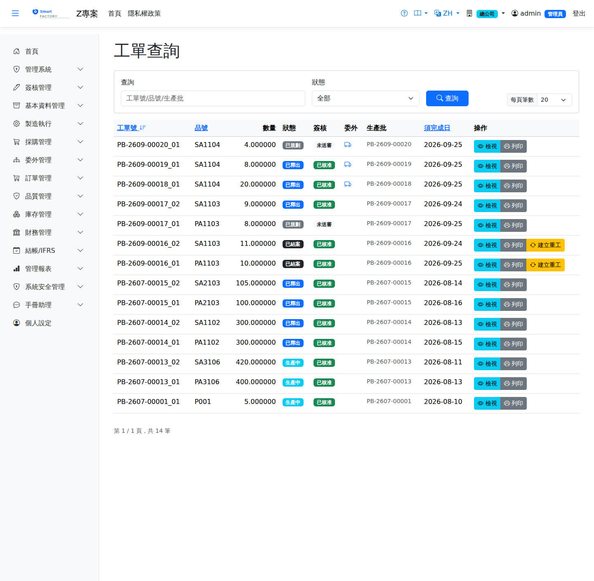

工單是生產執行的核心單據，記載生產品號、數量、工序（自途程快照）與用料。工單類型分一般（Normal）、重工（Rework，需指定來源工單）與委外（Outsource）。工單經投產後產生派工單，報工完成且通過 FQC 後由完工入庫繳庫；全部繳庫後工單自動完工。The work order is the central document of production: it records the item to be made, the quantity, the operations (snapshotted from the routing) and the material. There are three types — normal, rework (which needs a source work order) and outsource. Releasing a work order creates dispatches; once production has been reported and FQC passed, the output is received through Completion Receipt, and the work order finishes automatically when everything has been received.

工單查詢畫面截圖（示意，實際欄位/資料依權限與查詢條件而異）Work order enquiry screenshot (illustrative; actual fields and data vary by permission and query criteria)
查詢Search
1查詢列輸入條件後點「查詢」；欄位標題可點擊排序，清單下方有分頁導航。Enter your criteria on the query bar and click "Search"; column headers can be clicked to sort, and the paging controls sit below the list.
2可依狀態、品號、訂單號、預計開工區間篩選。Can be filtered by status, item, order number and planned start date range.
單據狀態Status
| 狀態Status | 說明Guide |
|---|
| 已規劃Planned | MRP 轉單或手動建立後的初始狀態，可編輯。Initial status after MRP conversion or manual creation; still editable. |
| 已投產Released | 經生產批投產釋出，產生派工單，凍結期內不受 MRP 重排影響。Released through batch release, which creates the dispatches; while frozen it is not moved by an MRP reschedule. |
| 生產中In production | 已有報工紀錄。production has already been reported. |
| 已完工Completed | 工單的派工全部完工或已取消（且至少一張完工）時自動完工；暫停中的派工不算完成，剩餘量要恢復生產或在派工作業以「剩餘量結案」結束。成本轉入工單實際成本。The work order completes automatically when all its dispatches are closed or cancelled (with at least one closed). A dispatch on hold does not count as finished: its remaining quantity has to be resumed or ended with "Close remaining quantity" on Dispatch Operations. The cost is carried into the work order's actual cost. |
| 已作廢Cancelled | 取消生產；已預留物料自動釋放，尚未結束的派工一併轉為「已取消」，不再出現在現場待辦、也不佔排程產能。Production is cancelled and any reserved material is released automatically. Unfinished dispatches become "Cancelled" at the same time, so they leave the shop-floor list and no longer take up scheduling capacity. |
整品委外工單：委外收回品每次合格入庫都會累計委外派工完工量，收滿後工單直接從「生產中」變「入庫完成」（不經「完工」、不做完工入庫）。Fully outsourced work orders: each time returned goods pass inspection and enter stock the outsourced dispatch's completed quantity grows, and once full the order goes straight from "In progress" to "Received into stock" (no "Completed" step, no production completion).
作業流程Process
手動建立工單Create a work order by hand
1點「新增」，選擇品號（自動帶入途程）、數量與預計完工日。Click "Add", then choose the item (the routing is filled in automatically), the quantity and the planned completion date.
2重工工單：在列表上對「完工」或「已入庫」的工單按「建立重工」，輸入重工數量，並在「重做工序」只勾需要重做的工序（預設全勾，至少勾一道）。系統開出類型為重工、連到原工單的工單，沿用原工單的批號與途程，只帶勾選的工序與掛在它們底下的用料；用料依「重工數量 ÷ 原工單數量」等比換算，已發量從 0 起算。不良品已入庫（例如已繳庫後才判退）時勾「不良品已入庫」，系統另加一行不良品本身的用料，投產時隨重工發料發出，完工時良品以它的帳面值回存貨；已入庫結案的工單預設勾、已完工未繳庫的預設不勾——生產中判 NG 的不良品不在帳上，勾了會讓倉庫把庫存裡的良品當成不良品發出去。NCR 處置「重工」執行後開出的重工工單規則相同，但帶入全部工序（執行時沒有勾選的地方）；只需重做部分工序時，請改從工單列表「建立重工」建立。投產時 Push 用料自動開的是「重工發料（RI）」，不是一般的廠內發料。重工工單的發退料不入帳，完工入庫時才結算原值與重工損失（見重工成本）。Rework orders: in the list, click Create Rework on a work order that is Completed or Closed enter the rework quantity, and under Operations to redo tick only the operations that must be redone (all are ticked by default; at least one is required). The system creates a work order of type Rework linked to the original, keeping its batch and routing and copying only the ticked operations and the materials under them; the materials are scaled by rework quantity ÷ original quantity and the issued quantities start at 0. When the defective items are in stock (for example rejected after being received), tick The defective items are in stock: a material line for the defective item itself is added, issued with the rework issue on release, and at completion the good units go back to inventory at its book value. It is ticked by default for a Closed (received) work order and unticked for a Completed one that has not been received — defective items rejected during production are not on the books, and ticking it would make the warehouse issue good units from stock as if they were the defective ones. A rework order created by executing an NCR rework disposition follows the same rules but takes all operations (there is nothing to tick when executing); if only some operations need redoing, create the rework from Create Rework in the work order list instead. On release, the slip created automatically for Push materials is a rework issue (RI), not an ordinary in-plant issue. Material issued to and returned from a rework order creates no journal entry; the original value and the rework loss are settled at completion receipt (see Rework cost).
3儲存後經投產流程釋出。Once saved, it is released through the release process.
4釋出後若在等待簽核，可在明細面板按「撤回」取消送審：工單回到「已規劃」、簽核狀態回到草稿，修改後可再釋出。簽核被駁回或退回修改時同樣自動回到「已規劃」，修正後重新釋出即可再次送審。哪些工單要送審：有工單簽核流程時，標準成本超過廠別參數的金額門檻者送審（沒設門檻則每張都送）；開了強制送審條件的委外、重工或延期工單一律送審。若符合上述條件但本廠沒有工單簽核流程，工單會直接核准並跳出提醒，請確認簽核設定。送審中或被駁回的工單不會被排程，也不能開工——核准後才進入生產。撤回或退回「已規劃」時，已排程但還沒開工的派工會退回「待排程」，重新投產後再排。If the release is waiting for approval, click "Withdraw" in the detail panel to cancel the submission: the work order goes back to Planned and its approval status to draft, so you can edit it and release it again. When the approval is rejected or returned for revision, the work order also goes back to Planned automatically; correct it and release it again to resubmit. Which work orders are submitted: with a work order approval flow, those whose standard cost is above the plant's amount threshold (every order if no threshold is set); outsourced, rework or delayed orders are always submitted when the corresponding mandatory condition is on. If an order meets these conditions but the plant has no work order approval flow, it is approved directly and a reminder pops up — please check the approval settings. A work order that is awaiting approval or was rejected is not scheduled and cannot be started — production begins only after approval. When it goes back to Planned (withdrawn or rejected), dispatches that were scheduled but not started return to "Pending scheduling" and are scheduled again after the next release.
5不再需要的工單在明細面板按「作廢」：未結束的派工一併取消、預留的料釋放。已有產出，或有已領未退的料時會擋下並說明——請先把料退回再作廢。尚未過帳的發料單：草稿到揀料中的會隨作廢自動取消；倉庫已確認揀料的發料單會擋下作廢（請倉庫先取消並把料放回原儲位，或過帳後開退料單退回）。已轉委外採購單的工單也會擋下：草稿委外採購單請先刪除；已確認者請先到委外採購單作廢（須尚未收貨、在外原料已退回）。工單作廢後，任何殘留的發料單或委外收貨都無法再過帳。已入庫完成或已作廢的工單沒有這個按鈕。To drop a work order you no longer need, click "Void" in the detail panel: its open dispatches are cancelled and reserved materials released. It is blocked, with the reason shown, if anything has been produced or issued materials have not been returned — return the materials first. Unposted issue slips: those from draft up to picking are cancelled automatically with the void; an issue slip the warehouse has already confirmed as picked blocks the void (have the warehouse cancel it and put the material back, or post it and then return the materials with a return slip). A work order already converted to an outsource purchase order is blocked too: delete a draft outsource PO first; void a confirmed one on Outsource Purchase Orders first (only before any receipt and once materials at the vendor are returned). Once a work order is voided, any leftover issue slip or outsource receipt for it can no longer be posted. Closed or voided work orders have no Void button.
重算為 0 不能投產：投產當下的可用量已經滿足毛需求（例如成品庫存已足），重算後的生產量是 0，代表這張工單不需生產。系統會擋下並說明，請改按「作廢」。整批投產時，這張工單連同它底下的半成品子工單一起略過，其餘照常投產，結果訊息會列出略過的工單。A work order recalculated to 0 cannot be released: the quantity available at release already covers the gross demand (for example there is enough finished stock), so the recalculated quantity is 0 and nothing needs to be produced. The release is blocked with an explanation; void the work order instead. In a batch release, that work order and the semi-finished child orders under it are skipped, the rest are released as usual, and the result message lists the skipped orders.
抵掉需求的庫存會保留給原訂單：投產重算用現有成品抵掉的量（含重算為 0 的整張），會自動保留給這張工單的來源訂單，別的出貨或工單不能動用；出貨時才扣掉。半成品子工單則保留給上階工單，上階工單發料時扣掉。手動建立、不是 MRP 展開的工單沒有來源訂單，不保留。Stock that covers the demand is held for the original order: the finished goods counted against the demand at release (including the whole quantity when the result is 0) are reserved for the order behind this work order. Other shipments and work orders cannot use them, and the reservation is used up when that order ships. For a semi-finished child order the stock is held for the parent work order and used up when the parent is issued. Work orders entered by hand, not created by MRP, have no source order and reserve nothing.
列印Printing
工單列印是發到現場用的：印工單抬頭、工序途程，以及各工序需領料——品號、品名、需求量、已發量、已退量、待發量（需求 − 已發 ＋ 已退）、單位與發料方式；後沖料完工時自動扣，待發量不適用。不印成本（標準／實際成本請在系統畫面查看）。The work order printout is meant for the shop floor: it shows the header, the routing and the materials to issue for each operation — product code and name, required, issued and returned quantities, quantity still to issue (required − issued + returned), unit and issue method; backflushed materials are deducted automatically at completion, so the quantity to issue does not apply. Costs are not printed (see standard and actual costs on screen).
欄位說明Field reference
表頭Header
| 欄位Field | 說明Guide |
|---|
| 工單號Work Order No | 系統採番，不可修改Numbered by the system; not editable |
| 品號Item | 本工單要生產的成品／半成品Finished or semi-finished item this work order produces |
| 數量Count | 計畫產出量；由 MRP 展開時依累積良率回推投產量Planned output; MRP works the release quantity back from the cumulative yield |
| 狀態Status | 工單的執行進度（計劃中／已投產／生產中／已完工／已結算）Progress of the work order (planned / released / in production / completed / settled) |
工序明細Operations
| 欄位Field | 說明Guide |
|---|
| 序Seq | 工序執行順序Order in which the operations run |
| 工序 / 工作中心Operation / Work center | 工序名稱與執行的工作中心Operation name and the work center that performs it |
| 整備Setup | 換模、換線等準備時間，每張派工單只計一次Setup time such as changing tooling or lines, counted once per dispatch |
| 單位工時Unit Time | 生產一個良品所需的標準工時Standard time needed to produce one good piece |
| 委外Outsource | 標示該工序是否委由外部廠商加工Marks whether the operation is subcontracted to an outside supplier |
| 用料Materials | 該工序展開自料表的用料清單The material list exploded from the BOM for this operation |
成本欄位Cost fields
| 欄位Field | 說明Guide |
|---|
| 材料 / 人工 / 製造費用Material / Labour / Manufacturing overhead | 三大成本要素，各自列出「標準」與「實際」The three cost elements, each shown as standard and actual |
| 標準Standard | 依標準用量與標準費率計算的應耗成本Cost that should have been consumed, calculated from the standard usage and the standard rate |
| 實際Actual | 實際投入的料工費累計；工單完工結算後產生差異，期末實際費率重估可能再調整Cumulative material, labour and overhead actually put in; the variance appears once the work order is settled, and the period-end actual rate re-estimate may adjust it again |
生產批投產Batch Release、派工作業Dispatch Operations、完工入庫Production Putaway、工單成本差異WO Cost Variance
工單畫面可檢視物料齊套狀況（MaterialRisk）；料不齊但在途料預計到貨日早於開工日者標示黃色待料風險。The work order screen shows the kitting status (MaterialRisk); where material is short but the in-transit quantity is expected before the start date, it is marked yellow as a material risk.
注意：Note:工單完工由系統依繳庫量自動判定，請勿以人工方式強制結案後再補繳庫。 The system decides when a work order is finished from the quantity received into stock; do not force it closed by hand and then receive the rest afterwards.